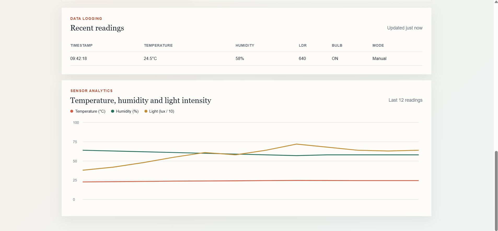

Prepare the physical system
Connect and verify the DHT11, LDR voltage divider, relay, and bulb load with the ESP32.
A complete ESP32 smart-home loop: environmental sensors send readings to Firebase, while the web dashboard sends control settings back to the device.
The ESP32 reads temperature and humidity from a DHT11 and ambient light from an LDR. It uploads each reading to Firebase, where the Task 4 dashboard updates live. In the other direction, the ESP32 reads the dashboard's control mode and light threshold, then switches a relay-connected bulb manually or automatically.
Connect and verify the DHT11, LDR voltage divider, relay, and bulb load with the ESP32.
Set up Firebase Authentication and Realtime Database for authorized users, device settings, and sensor records.
Connect the ESP32, Firebase, and Task 4 dashboard so readings and control changes flow in both directions.
DHT11, LDR voltage divider, relay module, bulb load, breadboard, and jumper wires connect to the ESP32.
Firebase Authentication identifies the user, while Realtime Database stores device settings and timestamped sensor readings.
The ESP32 joins Wi-Fi, reads settings, samples sensors, selects the relay state, and publishes fresh data on a roughly two-second cycle.
The web interface presents temperature, humidity, light level, connection state, history, export, and manual or automatic bulb control.
| Component signal | ESP32 connection |
|---|---|
| DHT11 DATA | GPIO 4 |
| LDR analog output | GPIO 34 (ADC1) |
| Relay IN | GPIO 26 |
| DHT11 power | 3.3 V and GND |
The DHT11 is sampled at its supported interval of about two seconds. The ESP32 takes 15 LDR samples and averages them to soften noisy analog readings (12-bit ADC range: 0–4095).
Manual mode follows the bulb command stored in Firebase. Automatic mode compares the averaged light reading with the configured threshold and controls the relay accordingly.
The database keeps user bulb control, operating mode, light threshold, and timestamp-keyed readings. Each reading includes temperature, humidity, light intensity, and relay state.
Arduino IDE, ESP32 Arduino core, DHT sensor and Adafruit Unified Sensor libraries, Firebase Arduino Client Library by Mobizt, Firebase Authentication, and Realtime Database.
Timestamp-keyed readings retain a history for the dashboard. Authentication identifies authorized users, and database rules control access to user controls and shared settings.
users/<uid>/bulb — user's bulb commandsettings/mode — manual or automatic modesettings/threshold — light trigger thresholdreadings/<unix time> — timestamped recordFor a local preview, serve the project folder with python -m http.server 8000.
Photos from the Task 5 build and connected system.


Video recorded during the Task 5 demonstration.
Read the original project report, including the objective, implementation, testing, and final outcome. Open the full document in a new tab.
The completed system links physical sensing, cloud storage, and web control. Sensor readings reach the dashboard in near real time, and relay commands travel back to the ESP32. If Wi-Fi or Firebase communication is lost, the firmware places the relay in the OFF state.
The project demonstrates how embedded sensors, cloud databases, authentication, and a web interface can operate as one system. It also highlights the value of filtering noisy sensor data and using realtime listeners to keep the dashboard current without page refreshes.